- 没有海外Apple ID如何下载 Meta Ladder（元链加速器）
方法一：创建新的Apple ID
需要准备的东西：
以注册一个香港区的Apple ID为例
一个未注册过Apple ID的邮箱
一个香港的真实地址以及电话号码
1. 没有邮箱？可前往网易邮箱免费注册一个新的邮箱。
2. 没有香港地址和电话号码？用下面这个吧。
美國駐港澳總領事館
地址: 香港花園道二十六號
電話: (852) 2523-9011
一个未注册过Apple ID的邮箱
一个香港的真实地址以及电话号码
1. 没有邮箱？可前往网易邮箱免费注册一个新的邮箱。
2. 没有香港地址和电话号码？用下面这个吧。
美國駐港澳總領事館
地址: 香港花園道二十六號
電話: (852) 2523-9011
海外Apple ID注册步骤：
1、进入Apple ID的创建页面，国家和地区填写"香港
"，邮箱需要填一个未注册过Apple ID的邮箱。
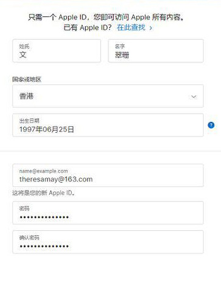
2、核对账户信息，确定国家或地区填写的是香港。
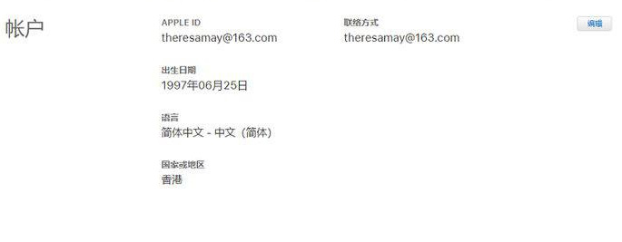
3、最关键的一步，点击[付款与送货]右侧的编辑按钮，填写相关信息。
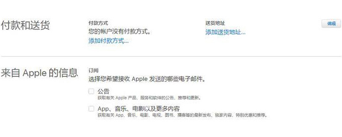
4、[付款方式]选择“无”，并按要求填写相关账单寄送地址和送货地址。最后点击“存储”。
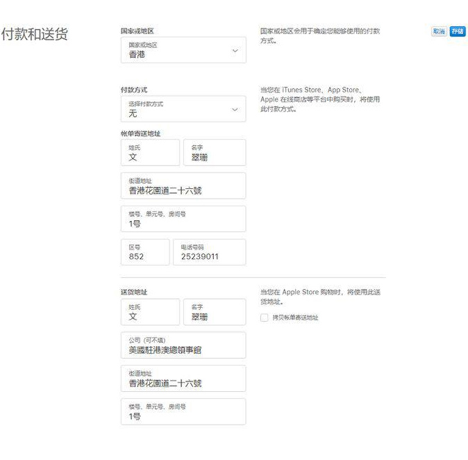
App Store操作步骤：
1、先打开App Store，点击右上角的用户头像，选择退出当前账号。
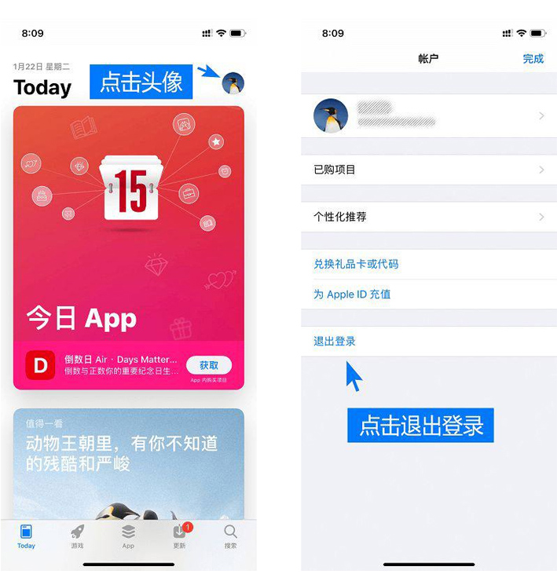
2、在当前页面登陆刚注册的海外 Apple ID，进行相关设置。
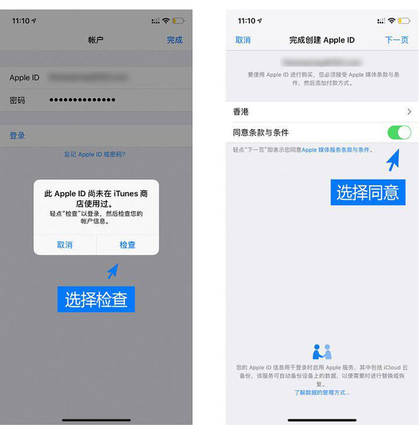
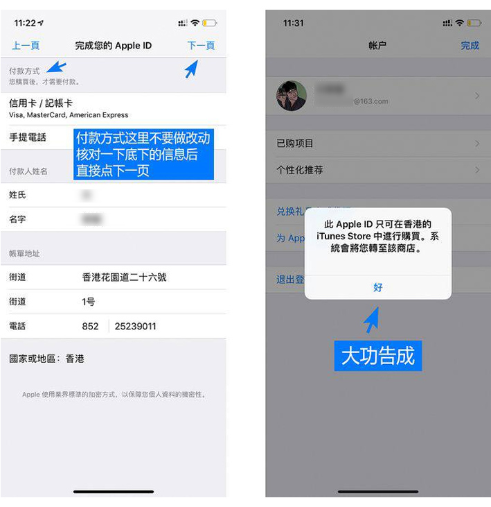
3、最后在香港区的App Store里搜索“Meta Ladder”即可下载。
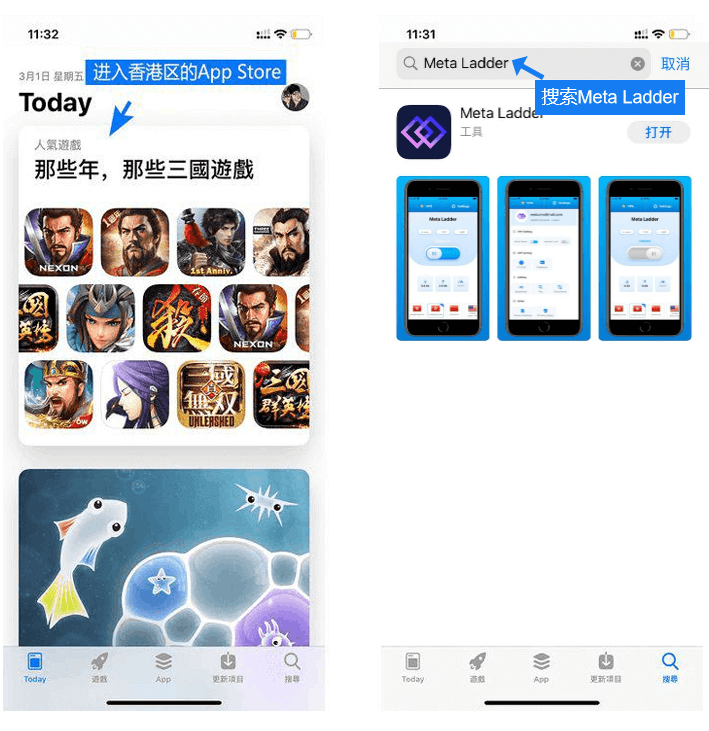
方法二：变更Apple ID国家归属
需要的准备工作：
1.以变更为香港区的Apple ID为例
一个香港的真实地址以及电话号码
没有香港地址和电话号码？用下面这个吧。
美國駐港澳總領事館
地址: 香港花園道二十六號
電話: (852) 2523-9011
2.用完您的 Apple ID 上的所有余额。如果您不确定有没有余额，请查看您的 Apple ID 余额。
3.取消您的订阅，并等到订阅期结束。
4.等待所有会员资格、预订、影片租借或季票结束，并等待任何待处理的商店余额退款处理完毕。您可以取消预订。
一个香港的真实地址以及电话号码
没有香港地址和电话号码？用下面这个吧。
美國駐港澳總領事館
地址: 香港花園道二十六號
電話: (852) 2523-9011
2.用完您的 Apple ID 上的所有余额。如果您不确定有没有余额，请查看您的 Apple ID 余额。
3.取消您的订阅，并等到订阅期结束。
4.等待所有会员资格、预订、影片租借或季票结束，并等待任何待处理的商店余额退款处理完毕。您可以取消预订。
使用 iPhone、iPad 或 iPod touch 来更改地区设置：
1.打开“设置”App。
2.轻点您的姓名，然后轻点“媒体与购买项目”。
3.轻点“显示帐户”。系统可能会要求您登录。
4.轻点“国家/地区”。
2.轻点您的姓名，然后轻点“媒体与购买项目”。
3.轻点“显示帐户”。系统可能会要求您登录。
4.轻点“国家/地区”。
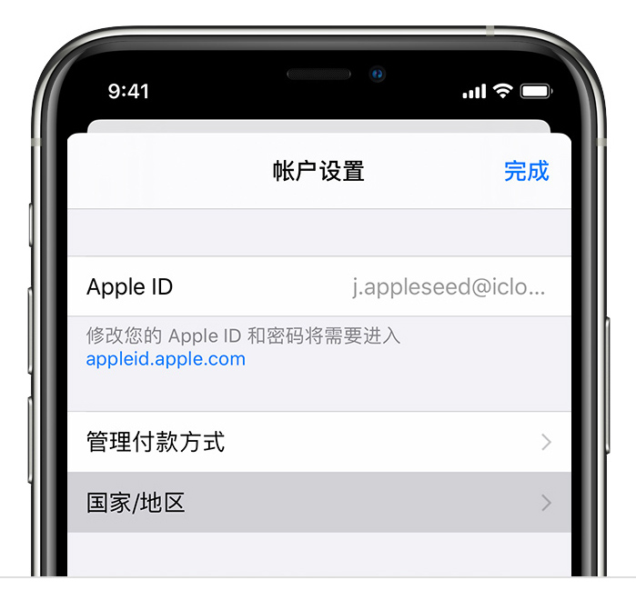
5.显示“帐户设置”页面的 iPhone。
6.轻点“更改国家或地区”。
7.轻点新国家或地区，然后查看“条款与条件”。
8.轻点右上角的“同意”，然后再次轻点“同意”以确认。
9.选择付款方式，输入您的新付款信息和账单邮寄地址，然后轻点“下一步”修改成功。
6.轻点“更改国家或地区”。
7.轻点新国家或地区，然后查看“条款与条件”。
8.轻点右上角的“同意”，然后再次轻点“同意”以确认。
9.选择付款方式，输入您的新付款信息和账单邮寄地址，然后轻点“下一步”修改成功。
使用电脑来更改地区设置：
1.打开“音乐”App 或 iTunes。
2.在屏幕顶部或 iTunes 窗口顶部的菜单栏中，点按“帐户”，然后点按“查看我的帐户”。
3.使用您的 Apple ID 登录。
4.在“帐户信息”页面，点按“更改国家或地区”。
2.在屏幕顶部或 iTunes 窗口顶部的菜单栏中，点按“帐户”，然后点按“查看我的帐户”。
3.使用您的 Apple ID 登录。
4.在“帐户信息”页面，点按“更改国家或地区”。
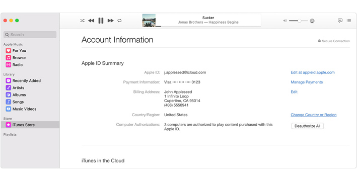
5.选择新国家或地区。
6.查看“条款与条件”，然后点按“同意”。再次点按“同意”以确认。
7.输入您的新付款信息*和账单邮寄地址，然后点按“继续”修改成功。
6.查看“条款与条件”，然后点按“同意”。再次点按“同意”以确认。
7.输入您的新付款信息*和账单邮寄地址，然后点按“继续”修改成功。
方法三：购买一个海外Apple ID
购买一个海外Apple ID
以购买一个香港区的Apple ID为例
购买链接：
购买链接：
App Store操作步骤：
1、先打开App Store，点击右上角的用户头像，选择退出当前账号。
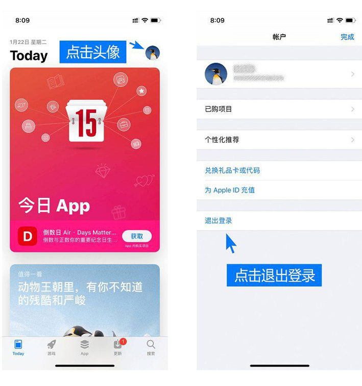
2、在当前页面登陆刚购买的海外 Apple ID，进行相关设置。
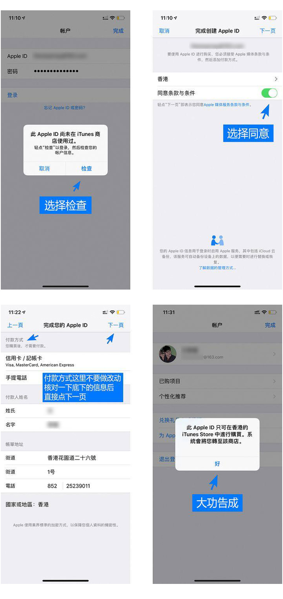
3、最后在香港区的App Store里搜索“Meta Ladder”即可下载。
本教程仅为元链加速器在IOS端的下载操作指南，不代表作者投资建议。投资有风险，您须充分认识风险并自行作出投资决策。